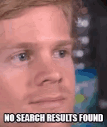

<ion-header [translucent]="true">
  <ion-toolbar>
    <ion-title>notfound404</ion-title>
  </ion-toolbar>
</ion-header>

<ion-content [fullscreen]="true">
  <div class="contenedor">
    
  </div>
</ion-content>
